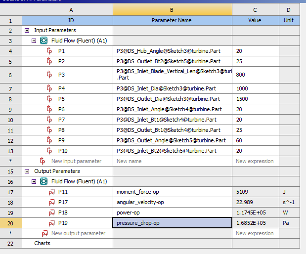

CFD + Machine Learning Pipeline for Turbine Design
A hybrid approach combining Computational Fluid Dynamics and Machine Learning to optimise hydraulic turbine blade geometry — built as an independent project to accelerate design through data-driven surrogate modelling.
Dynamic-mesh CFD simulation
The project began with detailed ANSYS Fluent simulations using dynamic meshing to analyse the transient fluid–structure interaction around turbine blades. Each run captured pressure, velocity and torque over time for different blade geometries and flow rates.
The resulting torque and power outputs were validated using velocity-triangle theory, ensuring CFD results aligned with analytical expectations. This dataset became the foundation for a surrogate model that predicts efficiency without repeating full simulations.
Velocity-contour animations from dynamic-mesh simulations.
Machine-learning surrogate model
Using data from 50+ simulation runs, features such as blade angle, curvature ratio and flow coefficient were extracted. A regression model trained on this data predicted turbine efficiency with accuracy exceeding 95%.
The trained model replaced CFD in subsequent optimisation runs, enabling rapid exploration of new blade designs — a 10× reduction in computational cost while maintaining near-CFD accuracy.

Input/output parameters set in ANSYS Workbench, coupled with SolidWorks.
Key tools & techniques
ANSYS Fluent (Dynamic Mesh, UDFs) · Python (scikit-learn, NumPy, Pandas) · data-driven surrogate optimisation · CFD post-processing & validation via velocity-triangle theory.